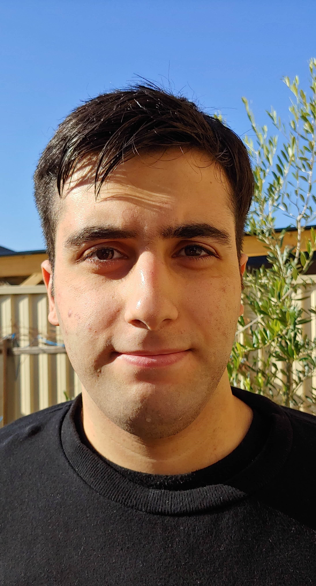

Rami Hikmat
Known as a leader since younghood, helped and participated in a lot of activities some of which were in the NSW parliament. I am very interested in Software Architecture/Engineering and how it relates to IoT as well as improving the world to be a better place. Currently, focused on web development through blogging and creating new websites/backends for me and for clients.
Currently striving to land a job as a back-end software engineer. Experienced using Javascript and Java. Striving to be better at Python.